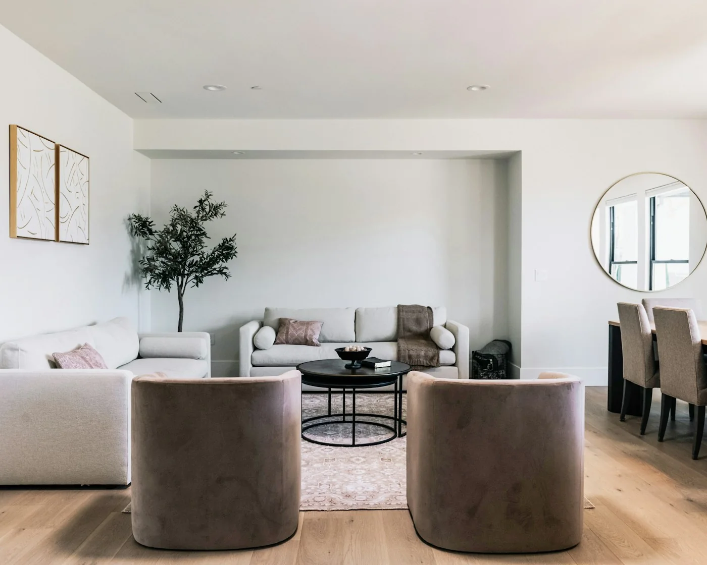

Знакомство
Обсуждаем образ жизни, настроение будущего интерьера и ваши приоритеты.
АРХИТЕКТУРА ПОВСЕДНЕВНОСТИ
Интерьеры, в которых красота
становится частью жизни.

ИЗБРАННЫЕ КОНЦЕПТЫ / 01—03
НАШ ВЗГЛЯД
Сначала — привычки, свет и движение. Затем — материалы, предметы и детали. Мы представляем пространство как продолжение человека.
ПУТЬ К ПРОСТРАНСТВУ
Обсуждаем образ жизни, настроение будущего интерьера и ваши приоритеты.
Собираем планировочное решение, палитру и основные материалы.
Прорабатываем визуализации, чертежи и подбор предметов.
В реальном проекте согласуем сопровождение реализации отдельно.
ПЕРВЫЙ ОРИЕНТИР
Выберите площадь и состав проекта.
Калькулятор покажет примерную стоимость дизайна.
Деморасчёт. Не оферта. Ремонт, мебель и материалы не включены.